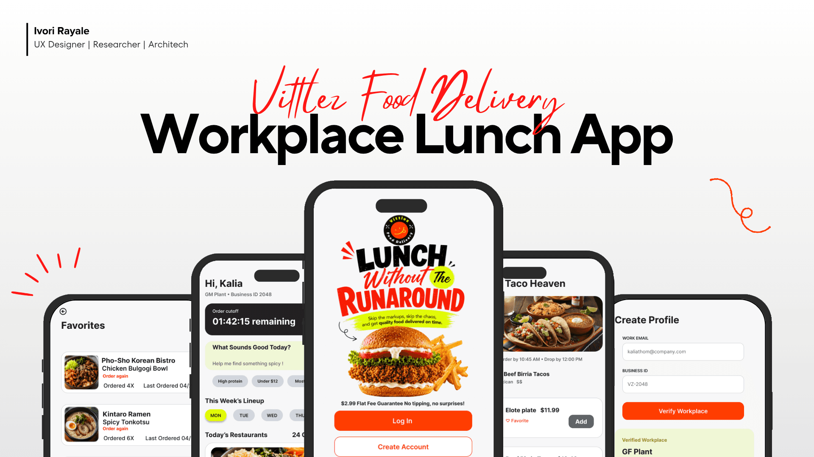

FEATURED EXPERIMENT ↗
EX. 001
Vittlez
A workplace lunch concept where people order individually and receive their meals together at one drop zone.
PRODUCT DESIGNERSOLO PROJECTAPP + BRAND
Explore the full case study
THE QUESTIONHow might a shared delivery window make individual lunch orders easier at work?
FIG. 01 / VITTLEZ COVER
